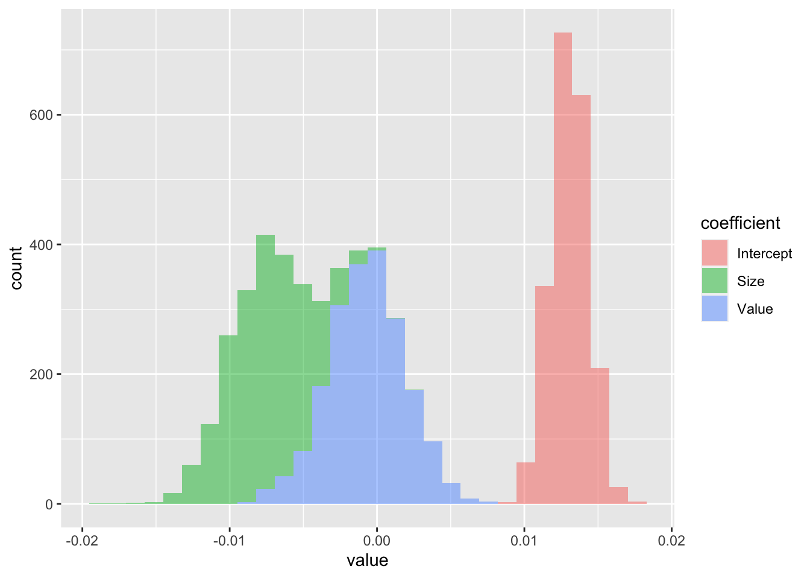
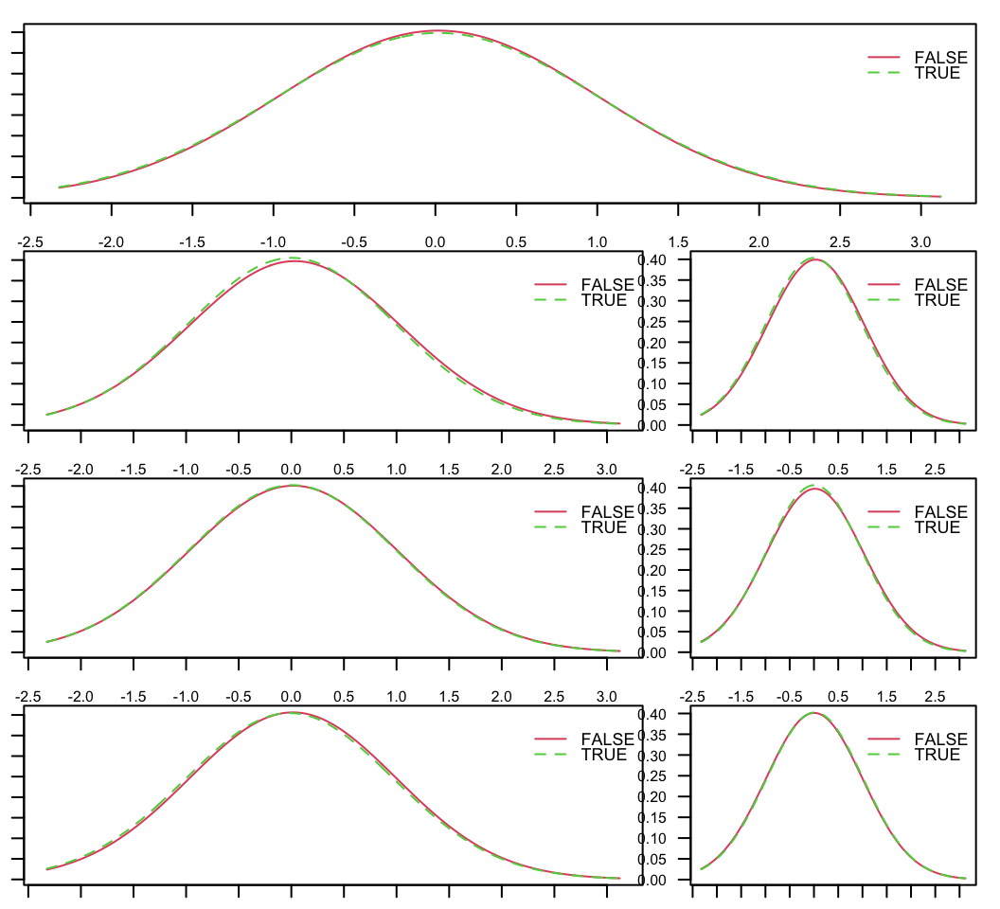
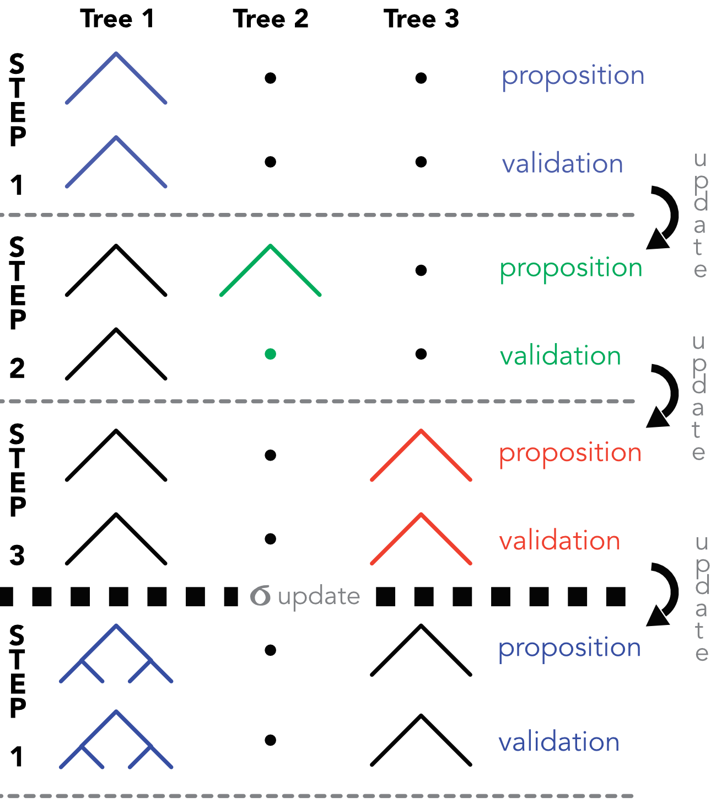
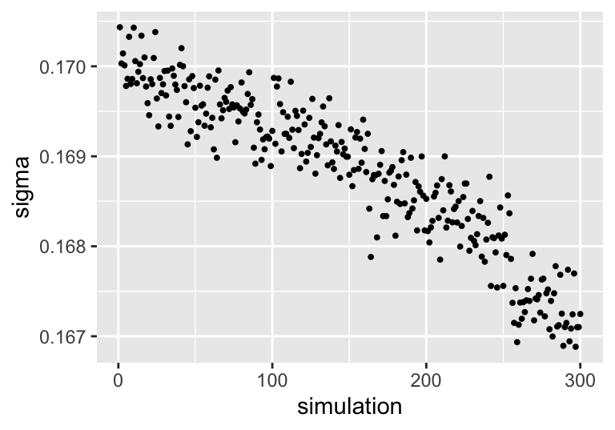

9 贝叶斯方法
本节专门介绍对参数进行事先假设的机器学习子集。在我们解释贝叶斯定理如何应用于机器学习中的简单构建块之前，我们在下面的小节中介绍一些符号和概念。贝叶斯分析的好参考是 Gelman et al. (2013) 和 Kruschke (2014)。后者与本书一样，用多行 R 代码说明了这些概念。贝叶斯推理用于 Feng and He (2021) 估计条件预期收益和残差协方差矩阵，以进行投资组合选择。
9.1 贝叶斯框架
到目前为止，所提出的模型仅依赖于数据。这种方法通常被称为“常客’。给定一个数据集，频率论者将提取（即估计）一组独特的最佳参数，并将其视为最佳模型。另一方面，贝叶斯主义者将数据集视为 现实的快照 而且，对于他们来说，参数是随机的！他们不是估计参数的一个值（例如线性模型中的系数），而是更加雄心勃勃并尝试确定 整体分布 的参数。
为了概述如何实现这一点，我们介绍基本符号和结果。贝叶斯分析的基本概念是 条件概率。给定两个随机集（或事件） \(A\) 和 \(B\)，我们定义概率 \(A\) 知道 \(B\) （同样地，拥有的几率 \(A\)，有条件地有 \(B\)) 作为 \[P[A|B]=\frac{P[A \cap B]}{P[B]},\] 即两个集合之间交集的概率除以 \(B\)。同样，两个事件发生的概率等于 \(P[A \cap B] = P[A]P[B|A]\)。给定 \(n\) 不相交的事件 \(A_i\), \(i=1,...n\) 这样 \(\sum_{i=1}^nP(A_i)=1\)，那么对于任意事件 \(B\)，总概率定律是（或暗示） \[P(B)=\sum_{i=1}^nP(B \cap A_i)= \sum_{i=1}^nP(B|A_i)P(A_i).\]
给定这个表达式，我们可以制定贝叶斯定理的通用版本： \[\begin{equation} \tag{9.1} P(A_i|B)=\frac{P(A_i)P(B|A_i)}{P(B)}= \frac{P(A_i)P(B|A_i)}{\sum_{i=1}^nP(B|A_i)P(A_i)}. \end{equation}\]
有了这个结果，我们就可以进入本节的核心主题，即一些参数的估计 \(\boldsymbol{\theta}\) （可能是一个向量）给定一个数据集，我们用 \(\textbf{y}\) 从而遵循以下公约 Gelman et al. (2013)。尽管如此，这种表示法在本书中并不是最理想的，因为在所有其他章节中， \(\textbf{y}\) 代表数据集的标签。
在贝叶斯分析中，一种复杂性（与频率论方法相比）来自于数据并不是万能的这一事实。参数的分布 \(\boldsymbol{\theta}\) 将是一些之间的混合 先前的 统计学家（用户、分析师）设置的分布和数据的经验分布。更准确地说，简单应用贝叶斯公式即可得出 \[\begin{equation} \tag{9.2} p(\boldsymbol{\theta}| \textbf{y})=\frac{p(\boldsymbol{\theta})p(\textbf{y} |\boldsymbol{\theta})}{p(\textbf{y})} \propto p(\boldsymbol{\theta})p(\textbf{y} |\boldsymbol{\theta}). \end{equation}\]
解释是直接的：分布 \(\boldsymbol{\theta}\) 了解数据 \(\textbf{y}\) 与分布成正比 \(\boldsymbol{\theta}\) 乘以分布 \(\textbf{y}\) 知道 \(\boldsymbol{\theta}\)。术语 \(p(\textbf{y})\) 通常被省略，因为它只是一个确保密度总和或积分为一的缩放数字。
我们在方程之间使用略有不同的符号 (9.1) 和方程 (9.2)。在前者中， \(P\) 表示真实概率，即它是一个数字。在后者中， \(p\) 代表整个概率密度函数 \(\boldsymbol{\theta}\) 或 \(\textbf{y}\).
贝叶斯分析的全部目的是计算所谓的 后部 分布 \(p(\boldsymbol{\theta}| \textbf{y})\) 通过 先前的 分布 \(p(\boldsymbol{\theta})\) 和 似然函数 \(p(\textbf{y} |\boldsymbol{\theta})\)。先验有时被限定为信息丰富、信息较弱或信息不丰富，具体取决于用户对先验的相关性和鲁棒性的信心程度。定义无信息先验的最简单方法是在某些实际间隔上设置恒定（均匀）分布。
最具挑战性的部分通常是似然函数。解决该问题的最简单方法是采用特定的分布（可能是参数族）来分布数据，然后考虑观测值是独立同分布的，就像简单的最大似然推理一样。如果我们假设分布的新参数被收集到 \(\boldsymbol{\lambda}\)，那么似然度可以写为 \[\begin{equation} \tag{9.3} p(\textbf{y} |\boldsymbol{\theta}, \boldsymbol{\lambda})=\prod_{i=1}^I f_{\boldsymbol{\lambda}}(y_i; \boldsymbol{\beta}), \end{equation}\] 但在这种情况下，问题变得稍微复杂一些，因为添加新参数会将后验分布更改为 \(p(\boldsymbol{\theta}, \boldsymbol{\lambda}|\textbf{y})\)。用户必须找出联合分布 \(\boldsymbol{\theta}\) 和 \(\boldsymbol{\lambda}\) - 给定 \(\textbf{y}\)。由于它们的嵌套结构，这些模型通常被称为 层次模型.
贝叶斯方法广泛用于投资组合选择。其基本原理是，资产收益的分布取决于某些参数，主要问题是确定后验分布。我们非常简要地回顾了下面大量的文献。贝叶斯资产配置的研究 Lai et al. (2011) （通过随机优化）， Guidolin and Liu (2016) 和 Dangl and Weissensteiner (2020)。收缩技术（均值和协方差矩阵）在 Frost and Savarino (1986), Kan and Zhou (2007) 和 DeMiguel, Martı́n-Utrera, and Nogales (2015)。同样， Tu and Zhou (2010) 建立与资产定价理论一致的先验。最后， Bauder et al. (2020) 样本投资组合收益可以得出贝叶斯最优边界。我们邀请感兴趣的读者也仔细研究这几篇文章中引用的参考文献。
9.2 贝叶斯采样
9.2.1 吉布斯抽样
贝叶斯定理的一个相邻应用领域是 模拟。假设我们要模拟随机向量的多元分布 \(\textbf{X}\) 由其密度给出 \(p=p(x_1,\dots,x_J)\)。通常，完整的分布很复杂，但其边缘更容易理解。事实上，它们更简单，因为它们仅依赖于一个变量（当所有其他值都已知时）： \[p(X_j=x_j|X_1= x_1,\dots,X_{j-1}=x_{j-1},X_{j+1}=x_{j+1},\dots,X_J=x_J)=p(X_j=x_j|\textbf{X}_{-j}=\textbf{x}_{-j}),\] 我们使用紧凑表示法 \(\textbf{X}_{-j}\) 对于所有变量，除了 \(X_j\)。一种利用规律生成样本的方法 \(p\) 如下并且依赖于条件句的知识 \(p(x_j|\textbf{x}_{-j})\) 以及关于 马尔可夫链蒙特卡罗，我们在下面概述。该过程是迭代的，并假设可以抽取上述条件的样本。我们写 \(x_j^{m}\) 为 \(m^{th}\) 的样本 \(j^{th}\) 变量（\(X_j\)）。模拟从先前（或固定或随机）样本开始 \(\textbf{x}^0=(x^0_1,\dots,x^0_J)\)。然后，对于足够多的次数，说 \(T\)，根据以下公式抽取新样本 \[\begin{align*} x_1^{m+1} &= p(X_1|X_2=x_2^{m}, \dots ,X_J=x_J^m) ;\\ x_2^{m+1} &=p(X_2|X_1=x_1^{m+1}, X_3=x^{m}_3, \dots, X_J=x_J^m); \\ \dots& \\ x_J^{m+1}&= p(X_J|X_1=x_1^{m+1}, X_2=x_2^{m+1}, \dots, X_{J-1}=x_{J-1}^{m+1}). \end{align*}\]
重要的细节是，在每一行之后，变量的值都会更新。因此，在第二行中， \(X_2\) 是用已知的知识进行采样的 \(X_1=x_1^{m+1}\) 在最后一行中，除 \(X_J\) 已更新为他们的 \((m+1)^{th}\) 状态。上述算法称为吉布斯采样。它与马尔可夫链相关，因为每个新迭代仅依赖于前一个迭代。
在某些技术假设下，如 \(T\) 增加，分布 \(\textbf{x}_T\) 收敛于 \(p\)。 20 世纪 90 年代的一系列文章广泛讨论了收敛发生的条件。有兴趣的读者可以看看例如 Tierney (1994), Roberts and Smith (1994)，以及第 11.7 节 Gelman et al. (2013).
有时，完整的分布很复杂，条件定律很难确定和采样。然后，可以使用一种更通用的方法，称为 Metropolis-Hastings，它依赖于拒绝方法来模拟随机变量。
9.2.2 大都会-黑斯廷斯抽样
Gibbs 算法可以被视为 Metropolis-Hastings (MH) 方法的一个特例，该方法的最简单版本是在 Metropolis and Ulam (1949)。前提是相似的：目的是模拟以下随机变量 \(p(\textbf{x})\) 能够从更简单的形式中进行采样 \(p(\textbf{x}|\textbf{y})\) 给出了未来状态的概率 \(\textbf{x}\)，给定过去的一个 \(\textbf{y}\).
一旦初始值为 \(\textbf{x}\) 已采样（\(\textbf{x}_0\)），每个新的迭代（\(m\)）的模拟分三个阶段进行：
- 生成候选值 \(\textbf{x}'_{m+1}\) 来自 \(p(\textbf{x}|\textbf{x}_m)\),
- 计算接受率 \(\alpha=\min\left(\frac{p(\textbf{x}'_{m+1})p(\textbf{x}_{m}|\textbf{x}'_{m+1})}{p(\textbf{x}_{m})p(\textbf{x}'_{m+1}|\textbf{x}_{m})} \right)\)
- 挑选 \(\textbf{x}_{m+1}=\textbf{x}'_{m+1}\) 有概率 \(\alpha\) 或坚持使用以前的值（\(\textbf{x}_{m+1}=\textbf{x}_{m}\)）有概率 \(1-\alpha\).
在一般情况下，接受率的解释并不简单。当采样发生器对称时（\(p(\textbf{x}|\textbf{y})=p(\textbf{y}|\textbf{x})\)），每当 \(p(\textbf{x}'_{m+1})\ge p(\textbf{x}_{m})\)。如果相反的条件成立（\(p(\textbf{x}'_{m+1})< p(\textbf{x}_{m})\)），那么候选人被保留的几率等于 \(p(\textbf{x}'_{m+1})/p(\textbf{x}_{m})\)，这是似然比。新提案的可能性越大，保留它的可能性就越高。
通常，第一次模拟会被丢弃，以便给链留下时间来收敛到高概率区域。此过程（通常称为“burn in”）确保第一个保留的样本位于可能的区域，即它们更能代表我们试图模拟的定律。
为了简洁起见，我们在这里坚持简洁的介绍，但一些额外的细节在第 11.2 节中概述 Gelman et al. (2013) 并在第 7 章中 Kruschke (2014).
9.3 贝叶斯线性回归
由于贝叶斯概念相当抽象，因此用一个简单的例子来说明理论概念是很有用的。在线性模型中， \(y_i=\textbf{x}_i\textbf{b}+\epsilon_i\) 并且统计上经常假设 \(\epsilon_i\) 是 i.i.d.均值和方差均为零的正态分布 \(\sigma^2\)。因此，方程的可能性 (9.3) 翻译成 \[p(\boldsymbol{\epsilon}|\textbf{b}, \sigma)=\prod_{i=1}^I\frac{e^{-\frac{\epsilon_i^2}{2\sigma}}}{\sigma\sqrt{2\pi}}=(\sigma\sqrt{2\pi})^{-I}e^{-\sum_{i=1}^I\frac{\epsilon_i^2}{2\sigma^2}}.\]
在回归分析中，数据由下式给出 \(\textbf{y}\) 并由 \(\textbf{X}\)，因此两者都在符号中报告。只是承认这一点 \(\boldsymbol{\epsilon}=\textbf{y}-\textbf{Xb}\)，我们得到 \[\begin{align} p(\textbf{y},\textbf{X}|\textbf{b}, \sigma)&=\prod_{i=1}^I\frac{e^{-\frac{\epsilon_i^2}{2\sigma}}}{\sigma\sqrt{2\pi}}\\ &=(\sigma\sqrt{2\pi})^{-I}e^{-\sum_{i=1}^I\frac{\left(y_i-\textbf{x}_i'\textbf{b}\right)^2}{2\sigma^2}}=(\sigma\sqrt{2\pi})^{-I} e^{-\frac{\left(\textbf{y}-\textbf{X}\textbf{b}\right)' \left(\textbf{y}-\textbf{X}\textbf{b}\right)}{2\sigma^2}} \nonumber \\ \tag{9.4} &=\underbrace{(\sigma\sqrt{2\pi})^{-I} e^{-\frac{\left(\textbf{y}-\textbf{X}\hat{\textbf{b}}\right)' \left(\textbf{y}-\textbf{X}\hat{\textbf{b}}\right)}{2\sigma^2}}}_{\text{depends on } \sigma, \text{ not } \textbf{b}}\times \underbrace{e^{-\frac{(\textbf{b}-\hat{\textbf{b}})'\textbf{X}'\textbf{X}(\textbf{b}-\hat{\textbf{b}})}{2\sigma^2}}}_{\text{ depends on both } \sigma, \text{ and } \textbf{b} }. \end{align}\] 在最后一行中，第二项是差值的函数 \(\textbf{b}-\hat{\textbf{b}}\), 其中 \(\hat{\textbf{b}}=(\textbf{X}'\textbf{X})^{-1}\textbf{X}'\textbf{y}\)。这并不奇怪： \(\hat{\textbf{b}}\) 是均值的自然基准 \(\textbf{b}\)。此外，还介绍了 \(\hat{\textbf{b}}\) 产生相对简单的概率形式。
上面的表达式是后验的频率论（基于数据）块：可能性。如果我们想要获得后验的易于处理的表达式，我们需要找到一个先验成分，其形式可以与这种可能性很好地结合。这些形式被称为 共轭先验。正确部分的自然候选者（这取决于两者 乙 和 \(\sigma\)) 是多元高斯密度： \[\begin{equation} \tag{9.5} p[\textbf{b}|\sigma]=\sigma^{-k}e^{-\frac{(\textbf{b}-\textbf{b}_0)'\boldsymbol{\Lambda}_0(\textbf{b}-\textbf{b}_0)}{2\sigma^2}}, \end{equation}\] 我们有义务就以下方面提出条件： \(\sigma\)。密度有先验平均值 \(\textbf{b}_0\) 和先验协方差矩阵 \(\boldsymbol{\Lambda}_0^{-1}\)。这个先验让我们更接近后验，因为 \[\begin{align} p[\textbf{b},\sigma|\textbf{y},\textbf{X}]& \propto p[\textbf{y},\textbf{X}|\textbf{b},\sigma]p[\textbf{b},\sigma] \nonumber \\ \tag{9.6} &\propto p[\textbf{y},\textbf{X}|\textbf{b},\sigma]p[\textbf{b}|\sigma]p[\sigma]. \end{align}\]
为了完全指定概率级联，我们需要考虑 \(\sigma\) 并设置表格的密度 \[\begin{equation} \tag{9.7} p[\sigma^2]\propto (\sigma^2)^{-1-a_0}e^{-\frac{b_0}{2\sigma^2}}, \end{equation}\] 与左侧部分接近 (9.4)。这对应于先验参数方差的逆伽玛分布 \(a_0\) 和 \(b_0\) （这个标量表示法不是最佳的，因为它可能与先前的平均值相混淆 \(\textbf{b}_0\) 所以我们必须格外注意）。
现在，我们可以简化 \(p[\textbf{b},\sigma|\textbf{y},\textbf{X}]\) 与 (9.4), (9.5) 和 (9.7): \[\begin{align*} p[\textbf{b},\sigma|\textbf{y},\textbf{X}]& \propto (\sigma\sqrt{2\pi})^{-I} \sigma^{-2(1+a_0)} e^{-\frac{\left(\textbf{y}-\textbf{X}\hat{\textbf{b}}\right)' \left(\textbf{y}-\textbf{X}\hat{\textbf{b}}\right)}{2\sigma^2}} \\ &\quad \times e^{-\frac{(\textbf{b}-\hat{\textbf{b}})'\textbf{X}'\textbf{X}(\textbf{b}-\hat{\textbf{b}})}{2\sigma^2}}\sigma^{-k}e^{-\frac{(\textbf{b}-\textbf{b}_0)'\boldsymbol{\Lambda}_0(\textbf{b}-\textbf{b}_0)}{2\sigma^2}}e^{-\frac{b_0}{2\sigma^2}} \\ \end{align*}\] 可以重写 \[\begin{align*} p[\textbf{b},\sigma|\textbf{y},\textbf{X}]& \propto \sigma^{-I-k-2(1+a_0)} \\ &\times \exp\left(-\frac{\left(\textbf{y}-\textbf{X}\hat{\textbf{b}}\right)' \left(\textbf{y}-\textbf{X}\hat{\textbf{b}}\right) + (\textbf{b}-\hat{\textbf{b}})'\textbf{X}'\textbf{X}(\textbf{b}-\hat{\textbf{b}}) + (\textbf{b}-\textbf{b}_0)'\boldsymbol{\Lambda}_0(\textbf{b}-\textbf{b}_0)+b_0}{2\sigma^2} \right) . \end{align*}\]
上面的表达式只是一个二次形式 \(\textbf{b}\) 它可以在繁重的代数之后以更紧凑的方式重写： \[\begin{equation} \label{eq:linpost} p(\textbf{b}|\textbf{y},\textbf{X},\sigma) \propto \left[\sigma^{-k}e^{-\frac{(\textbf{b}-\textbf{b}_*)'\boldsymbol{\Lambda}_*(\textbf{b}-\textbf{b}_*)}{2\sigma^2}}\right] \times \left[ (\sigma^2)^{-1-a_*}e^{-\frac{b_*}{2\sigma^2}} \right], \end{equation}\]
哪里 \[\begin{align*} \boldsymbol{\Lambda}_* &= \textbf{X}'\textbf{X}+\boldsymbol{\Lambda}_0 \\ \textbf{b}_*&= \boldsymbol{\Lambda}_*^{-1}(\boldsymbol{\Lambda}_0\textbf{b}_0+\textbf{X}'\textbf{X}\hat{\textbf{b}}) \\ a_* & = a_0 + I/2 \\ b_* &=b_0+\frac{1}{2}\left(\textbf{y}'\textbf{y}+ \textbf{b}_0'\boldsymbol{\Lambda}_0\textbf{b}_0+\textbf{b}_*'\boldsymbol{\Lambda}_*\textbf{b}_* \right).\\ \end{align*}\]
该表达式有两部分：高斯分量主要涉及 \(\textbf{b}\)，以及反伽玛分量，完全致力于 \(\sigma\)。先验数据和数据之间的混合是清晰的。高斯部分的后验协方差矩阵 (\(\boldsymbol{\Lambda}_*\)) 是数据的先验形式和二次形式之间的总和。后验均值 \(\textbf{b}_*\) 是先前的加权平均值 \(\textbf{b}_0\) 和样本估计器 \(\hat{\textbf{b}}\)。这种根据数据估计的数量和用户提供的版本的混合通常称为 收缩。例如，交叉项的原始矩阵 \(\textbf{X}'\textbf{X}\) 向先前收缩 \(\boldsymbol{\Lambda}_0\)。这可以看作是 正则化 程序：源自数据的纯拟合与一些“外部”成分混合，为最终估计提供某种结构。
有兴趣的读者还可以看看16.3节 Greene (2018) （共轭先验的情况在第 16.3.2 小节中处理）。
上述公式可能很长并且实施起来存在风险。幸运的是，有一个 R 包（\(spBayes\)）使用共轭先验执行线性回归的贝叶斯推理。下面，我们提供一个示例来说明其工作原理。为了简化代码并减少计算时间，我们考虑两个预测变量：市值（规模异常）和市净率（价值异常）。在统计学中， 精度矩阵 是协方差矩阵的逆矩阵。在参数中，前两个先验与高斯定律相关，后两个先验与逆伽玛分布相关： \[f_\text{invgamma}(x, \alpha, \beta)=\frac{\beta^\alpha}{\Gamma(\alpha)}x^{-1-\alpha}e^{-\frac{\beta}{x}},\] 其中 \(\alpha\) 是形状和 \(\beta\) 是规模。
prior_mean <- c(0.01,0.1,0.1) # Average value of parameters (prior)
precision_mat <- diag(prior_mean^2) %>% solve() # Inverse cov matrix of parameters (prior)
fit_lmBayes <- bayesLMConjugate(
R1M_Usd ~ Mkt_Cap_3M_Usd + Pb, # Model: size and value
data = testing_sample, # Data source, here, the test sample
n.samples = 2000, # Number of samples used
beta.prior.mean = prior_mean, # Avg prior: size & value rewarded & unit beta
beta.prior.precision = precision_mat, # Precision matrix
prior.shape = 0.5, # Shape for prior distribution of sigma
prior.rate = 0.5) # Scale for prior distribution of sigma在上面的规范中，我们还必须为常量提供先验。默认情况下，我们将其平均值设置为 0.01，相当于 1% 的平均月收益率。一旦模型被估计，我们就可以绘制系数估计的分布。
fit_lmBayes$p.beta.tauSq.samples[,1:3] %>% as_tibble() %>%
`colnames<-`(c("Intercept", "Size", "Value")) %>%
gather(key = coefficient, value = value) %>%
ggplot(aes(x = value, fill = coefficient)) + geom_histogram(alpha = 0.5)
图 9.1：线性回归系数（beta）的分布。
图中常数的分布 9.1 牢牢地靠右且离散度小，因此它是牢靠的正值。对于尺寸系数则相反；它是负的（小公司更有利可图）。关于价值，很难得出结论，分布平衡在零附近：没有明确说明市净率变量。
9.4 朴素贝叶斯分类器
贝叶斯定理也可以很容易地应用于 分类。我们根据标签和特征制定它并写下 \[\begin{equation} \tag{9.8} P[\textbf{y} | \textbf{X}] = \frac{P[ \textbf{X} | \textbf{y}]P[\textbf{y}]}{P[\textbf{X}]} \propto P[ \textbf{X} | \textbf{y}]P[\textbf{y}], \end{equation}\] 然后将输入矩阵拆分为其列向量 \(\textbf{X}=(\textbf{x}_1,\dots,\textbf{x}_K)\)。这产生 \[\begin{equation} \tag{9.9} P[\textbf{y} | \textbf{x}_1,\dots,\textbf{x}_K] \propto P[\textbf{x}_1,\dots,\textbf{x}_K| \textbf{y}]P[\textbf{y}]. \end{equation}\]
该方法的“朴素”限定来自于对特征的简化假设。19 如果它们都是相互独立的，那么上式中的似然度可以展开为 \[\begin{equation} \tag{9.10} P[\textbf{y} | \textbf{x}_1,\dots,\textbf{x}_K] \propto P[\textbf{y}]\prod_{k=1}^K P[\textbf{x}_k| \textbf{y}]. \end{equation}\]
下一步是更具体地说明可能性。这可以通过非参数方式（通过核估计）或常见分布（连续数据的高斯分布，二进制数据的伯努利分布）来完成。在因子投资中，特征是连续的，因此高斯定律更合适： \[P[x_{i,k}=z|\textbf{y}_i= c]=\frac{e^{-\frac{(z-m_c)^2}{2\sigma_c^2}}}{\sigma_c\sqrt{2\pi}},\] 其中 \(c\) 是所修课程的价值 \(y\) 和 \(\sigma_c\) 和 \(m_c\) 是标准误差和平均值 \(x_{i,k}\)，条件为 \(y_i\) 等于 \(c\)。在实践中，每个类都会被跨越，训练集也会被相应地过滤， \(\sigma_c\) 和 \(m_c\) 被视为样本统计量。这种高斯参数化可能不适合我们的数据集，因为特征是均匀分布的。即使经过调节，分布也不太可能接近高斯分布。从技术上讲，这可以通过双重变换方法来克服。给定一个特征向量 \(\textbf{x}_k\) 与经验累积分布函数 \(F_{\textbf{x}_k}\)，变量 \[\begin{equation} \tag{9.11} \tilde{\textbf{x}}_k=\Phi^{-1}\left(F_{\textbf{x}_k}(\textbf{x}_k) \right), \end{equation}\] 无论何时都会有一个标准的正常法 \(F_{\textbf{x}_k}\) 不是病态的。非病理情况是指 cdf 连续且严格递增且观测值位于开区间 (0,1) 内。如果所有特征都是独立的，则变换不应对相关结构产生任何影响。否则，我们参考有关 NORmal-To-Anything (NORTA) 方法的文献（例如，参见 H. Chen (2001) 和 Coqueret (2017)).
最后，之前的 \(P[\textbf{y}]\) 在方程中 (9.10) 通常被认为是跨类统一的（\(1/K\) 为所有人 \(k\)) 或等于样本分布。
我们用一个简单的例子来说明朴素贝叶斯分类工具。虽然包 e1071 嵌入这样一个分类器， naivebayes 库提供了更多选项（高斯、伯努利、多项式和非参数似然）。下面，由于特征是均匀分布的，因此变换为 (9.11) 相当于应用高斯分位数函数（逆 cdf）。
为了视觉清晰度，我们只使用一小部分特征。
library(naivebayes) # Load package
gauss_features_train <- training_sample %>% # Build sample
dplyr::select(features_short) %>%
as.matrix() %>%
`*`(0.999) %>% # Features smaller than 1
+ (0.0001) %>% # Features larger than 0
qnorm() %>% # Inverse Gaussian cdf
`colnames<-`(features_short)
fit_NB_gauss <- naive_bayes(x = gauss_features_train, # Transformed features
y = training_sample$R1M_Usd_C) # Label
layout(matrix(c(1,1,2,3,4,5,6,7), 4, 2, byrow = TRUE), # Organize graphs
widths=c(0.9,0.45))
par(mar=c(1, 1, 1, 1))
plot(fit_NB_gauss, prob = "conditional")
图 9.2：预测变量的分布，以标签类别为条件。 TRUE 是当实例对应于高于中位数收益率而 FALSE 对应于低于中位数收益率时。
图中的图 9.2 根据标签的每个值显示特征的分布。本质上，这些是密度 \(P[\textbf{x}_k| \textbf{y}]\)。对于每个特征，两个分布都非常相似。
像往常一样，一旦模型经过训练，就可以评估预测的准确性。
gauss_features_test <- testing_sample %>%
dplyr::select(features_short) %>%
as.matrix() %>%
`*`(0.999) %>%
+ (0.0001) %>%
qnorm() %>%
`colnames<-`(features_short)
mean(predict(fit_NB_gauss, gauss_features_test) == testing_sample$R1M_Usd_C) # Hit ratio## [1] 0.4956985分类器的性能并不令人满意，因为它的性能低于随机猜测。
9.5 贝叶斯加法树
9.5.1 一般配方
贝叶斯加性回归树（BARTs）是一种混合了贝叶斯思维和回归树的集成技术。在精神上，它们与本章中看到的树群很接近 6，但它们在实现上有很大不同。在 BARTs 中，就像贝叶斯回归一样，正则化来自先验。文章原文是 Chipman, George, and McCulloch (2010) 实现（在 R 中）如下 Sparapani, Spanbauer, and McCulloch (2019)。 BARTs已用于 Shu and Tiwari (2021) 以确定哪些特征被定价。作者报告说，股票市值是唯一重要的因素。
形式上，该模型是以下内容的聚合 \(M\) 模型，我们写为 \[\begin{equation} \tag{9.12} y = \sum_{m=1}^M\mathcal{T}_m(q_m,\textbf{w}_m, \textbf{x}) + \epsilon, \end{equation}\] 其中 \(\epsilon\) 是具有方差的高斯噪声 \(\sigma^2\)，以及 \(\mathcal{T}_m=\mathcal{T}_m(q_m,\textbf{w}_m, \textbf{x})\) 是具有结构的决策树 \(q_m\) 和权重向量 \(\textbf{w}_m\)。这种树的分解是我们用于提升树的分解，如图所示 6.5. \(q_m\) 对所有分割（为分割选择的变量和分割的级别）和向量进行编码 \(\textbf{w}_m\) 对应于叶值（在终端节点）。
在宏观层面上，BARTs可以被视为传统的贝叶斯对象，其中参数 \(\boldsymbol{\theta}\) 所有未知数都通过编码 \(q_m\), \(\textbf{w}_m\) 和 \(\sigma^2\) 重点是确定后验 \[\begin{equation} \tag{9.13} \left(q_m,\textbf{w}_m,\sigma^2\right) | (\textbf{X}, \textbf{Y}). \end{equation}\]
给定特定形式的先验 \(\left(q_m,\textbf{w}_m,\sigma^2\right)\)，该算法使用 Metropolis-Hastings 的组合来绘制参数 和 吉布斯采样器。
9.5.2 先验者
树模型中先验的定义是微妙而复杂的。第一个重要假设是独立性：之间的独立性 \(\sigma^2\) 以及树之间（即树对之间）的所有其他参数和独立性 \((q_m,\textbf{w}_m)\) 和 \((q_n,\textbf{w}_n)\) 为了 \(m\neq n\)。这个假设使得 BARTs 在精神上更接近随机森林，而距离提升树更远。这种独立性意味着
\[P(\left(q_1,\textbf{w}_1\right),\dots,\left(q_M,\textbf{w}_M\right),\sigma^2)=P(\sigma^2)\prod_{m=1}^MP\left(q_m,\textbf{w}_m\right).\]
此外，习惯上（为了简单起见）将树的结构分开（\(q_m\)）和终端权重（\(\textbf{w}_m\)），这样通过贝叶斯条件
\[\begin{equation} \tag{9.14} P(\left(q_1,\textbf{w}_1\right),\dots,\left(q_M,\textbf{w}_M\right),\sigma^2)=\underbrace{P(\sigma^2)}_{\text{noise term}}\prod_{m=1}^M\underbrace{P\left(\textbf{w}_m|q_m\right)}_{\text{tree weights}}\underbrace{P(q_m)}_{\text{tree struct.}} \end{equation}\]
仍然需要为这三个部分中的每一个制定假设。
我们从树木的结构开始， \(q_m\)。树由它们的分裂（在节点处）定义，这些分裂由分裂变量和分裂级别来表征。首先，树的大小被参数化，使得深度处的节点 \(d\) 是非终结符，概率为 \[\begin{equation} \tag{9.15} \alpha(1+d)^{-\beta}, \quad \alpha \in (0,1), \quad \beta >0. \end{equation}\] 作者建议设置 \(\alpha = 0.95\) 和 \(\beta=2\)。这给出了拥有 1 个节点的概率为 5%，拥有 2 个节点的概率为 55%，拥有 3 个节点的概率为 28%，拥有 4 个节点的概率为 9%，拥有 5 个节点的概率为 3%。因此，目的是迫使结构相对较浅。
其次，分割变量的选择是由广义伯努利（分类）分布驱动的，该分布定义了选择一个特定特征的几率。在原始论文中由 Chipman, George, and McCulloch (2010)，概率向量是均匀的（每个预测变量被选择用于分割的几率相同）。该向量也可以是随机的，并且可以从更灵活的狄利克雷分布中采样。分割级别统一绘制在所选预测变量的一组可能值上。
确定了树结构的先验 \(q_m\)，仍然需要修复叶子处的终端值（\(\textbf{w}_m|q_m\)）。假设所有叶子的权重遵循高斯分布 \(\mathcal{N}(\mu_\mu,\sigma_\mu^2)\), 其中 \(\mu_\mu=(y_\text{min}+y_\text{max})/2\) 是标签值范围的中心。方差 \(\sigma_\mu^2\) 选择使得 \(\mu_\mu\) 加减两次 \(\sigma_\mu^2\) 覆盖训练数据集中观察到的范围的 95%。这些是默认值，用户可以更改。
最后，出于类似于线性回归的计算目的，参数 \(\sigma^2\) （方差为 \(\epsilon\) 在 (9.12)) 假设遵循反伽马定律 \(\text{IG}(\nu/2,\lambda \nu/2)\) 类似于贝叶斯回归中使用的方法。默认情况下，参数是根据数据计算的，因此分布 \(\sigma^2\) 是现实的并且可以防止过度拟合。有关此主题的更多详细信息，请参阅原始文章第 2.2.4 节。
总而言之，除了 \(M\) （树的数量），先验取决于少量参数： \(\alpha\) 和 \(\beta\) （对于树结构）， \(\mu_\mu\) 和 \(\sigma_\mu^2\) （对于树的权重）和 \(\nu\) 和 \(\lambda\) （对于噪声项）。
9.5.3 抽样和预测
后验分布为 (9.13) 无法通过分析获得，但模拟是模型的有效捷径 (9.12)。正如吉布斯和大都会-黑斯廷斯抽样一样，模拟的分布预计会收敛到所寻求的后验。经过一些老化样本后，对新观察到的集合进行预测 \(\textbf{x}_*\) 只是模拟预测的平均值（或中值）。如果我们假设 \(S\) 老化后的模拟，则平均值等于 \[\tilde{y}(\textbf{x}_*):=\frac{1}{S}\sum_{s=1}^S\sum_{m=1}^M\mathcal{T}_m\left(q_m^{(s)},\textbf{w}_m^{(s)}, \textbf{x}_*\right).\]
复杂的部分自然是生成模拟。每棵树都使用 Metropolis-Hastings 方法进行采样：提出了一棵树，但它仅在某些（可能是随机的）标准下替换现有的树。然后以类似吉布斯的方式重复此过程。
让我们从 MH 构建块开始。我们试图模拟条件分布
\[(q_m,\textbf{w}_m) \ | \ (q_{-m},\textbf{w}_{-m},\sigma^2, \textbf{y}, \textbf{x}),\]
其中 \(q_{-m}\) 和 \(\textbf{w}_{-m}\) 收集除树号之外的所有树的结构和权重 \(m\)。 BART 中的一项杰作是简化上述吉布斯画法 \[(q_m,\textbf{w}_m) \ | \ (\textbf{R}_{m},\sigma^2 ),\] 其中 \(\textbf{R}_{m}=\textbf{y}-\sum_{l \neq m}\mathcal{T}_l(q_l,\textbf{w}_l, \textbf{x})\) 是排除预测的部分残差 \(m^{th}\) 树。
新的 MH 提案 \(q_m\) 基于前一棵树，并且该树存在三种可能（且随机）的更改：
- 生长终端节点（通过添加补充叶子来增加树的复杂性）；
- 修剪一对终端节点（相反的操作：降低复杂度）；
- 改变分割规则。
为了简单起见，第三个选项通常被排除在外。一旦树结构被定义（即采样），终端权重将根据高斯分布独立绘制 \(\mathcal{N}(\mu_\mu, \sigma_\mu^2)\).
树被采样后，MH 原则要求根据某种概率接受或拒绝它。该概率随着新树增加模型可能性的可能性而增加。其详细计算比较繁琐，我们参考《 Sparapani, Spanbauer, and McCulloch (2019) 有关此事的详细信息。
现在，我们必须概述总体吉布斯程序。首先，该算法从简单节点的树开始。然后，指定循环次数包括以下 sequential 步骤：
| 步骤 | 任务 |
|---|---|
| 1 | 样品 \((q_1,\textbf{w}_1) \ | \ (\textbf{R}_{1},\sigma^2 )\); |
| 2 | 样品 \((q_2,\textbf{w}_2) \ | \ (\textbf{R}_{2},\sigma^2 )\); |
| … | …; |
| 米 | 样品 \((q_m,\textbf{w}_m) \ | \ (\textbf{R}_{m},\sigma^2 )\); |
| … | …; |
| 中号 | 样品 \((q_M,\textbf{w}_M) \ | \ (\textbf{R}_{M},\sigma^2 )\); （最后一棵树） |
| M+1 | 样品 \(\sigma^2\) 给定全部残差 \(\textbf{R}=\textbf{y}-\sum_{l=1}^M\mathcal{T}_l(q_l,\textbf{w}_l, \textbf{x})\) |
每一步 \(m\)，残差 \(\textbf{R}_{m}\) 使用步骤中的值进行更新 \(m-1\)。我们用图来说明这个过程 9.3 其中 \(M=3\)。在步骤 1 中，建议对第一棵树进行分区，该树是一个简单节点。在这种特殊情况下，该树被接受。在该示意图中，为了简单起见，省略了终端权重。在步骤 2 中，为树提出了另一个分区，但被拒绝了。第三步，第三个提议被接受。第三步之后，新的值 \(\sigma^2\) 抽出后，新一轮吉布斯抽样即可开始。

图 9.3： MH/BARTs 吉布斯采样图。在步骤 2 中，提出的树未被接受。
9.5.4 代码
有几个实现 BART 方法的 R 包： BART, bartMachine 和一个旧的（原来的）， BayesTree。第一个非常高效，因此我们使用它。我们只使用几个参数，例如功率和基数，它们是 \(\beta\) 和 \(\alpha\) 定义于 (9.15)。该程序有点冗长，并提供了一些参数详细信息。
library(BART) # Load package
fit_bart <- gbart( # Main function
x.train = dplyr::select(training_sample, features_short) %>% # Training features
data.frame(),
y.train = dplyr::select(training_sample, R1M_Usd) %>% # Training label
as.matrix() ,
x.test = dplyr::select(testing_sample, features_short) %>% # Testing features
data.frame(),
type = "wbart", # Option: label is continuous
ntree = 20, # Number of trees in the model
nskip = 100, # Size of burn-in sample
ndpost = 200, # Number of posteriors drawn
power = 2, # beta in the tree structure prior
base = 0.95) # alpha in the tree structure prior## *****Calling gbart: type=1
## *****Data:
## data:n,p,np: 198128, 7, 70208
## y1,yn: -0.049921, 0.024079
## x1,x[n*p]: 0.010000, 0.810000
## xp1,xp[np*p]: 0.270000, 0.880000
## *****Number of Trees: 20
## *****Number of Cut Points: 100 ... 100
## *****burn,nd,thin: 100,200,1
## *****Prior:beta,alpha,tau,nu,lambda,offset: 2,0.95,1.57391,3,2.84908e-31,0.0139209
## *****sigma: 0.000000
## *****w (weights): 1.000000 ... 1.000000
## *****Dirichlet:sparse,theta,omega,a,b,rho,augment: 0,0,1,0.5,1,7,0
## *****printevery: 100
##
## MCMC
## done 0 (out of 300)
## done 100 (out of 300)
## done 200 (out of 300)
## time: 31s
## trcnt,tecnt: 200,200模型训练完成后，20 我们评估了它的性能。我们简单地计算命中率。预测嵌入在拟合变量中，名称为“测试’.
mean(fit_bart$yhat.test * testing_sample$R1M_Usd > 0)## [1] 0.5432794性能 似乎 合理但绝不令人印象深刻。所有采样树的数据都可以在 fit_bart 变量。尽管如此，它仍然具有复杂的结构（就像树的情况一样）。我们可以提取的最简单的信息是 \(\sigma\) 在所有 300 次模拟中（见图 9.4).
data.frame(simulation = 1:300, sigma = fit_bart$sigma) %>%
ggplot(aes(x = simulation, y = sigma)) + geom_point(size = 0.7)
图 9.4：BART 模拟中 sigma 的演变。
我们看到，随着样本数量的增加， \(\sigma\) 减少。